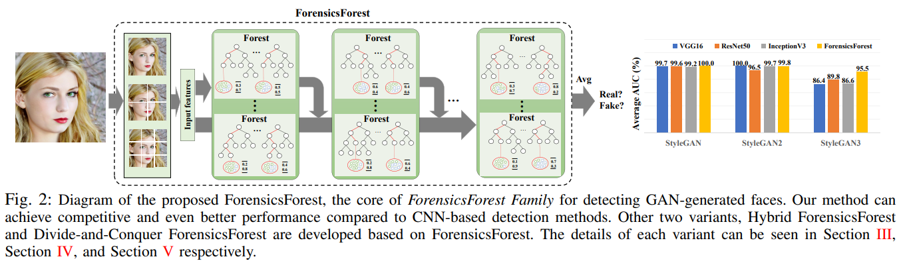
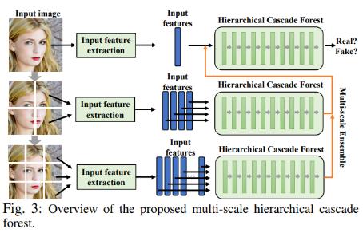
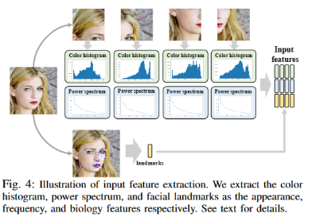
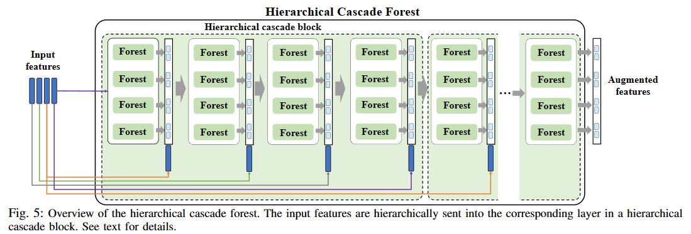
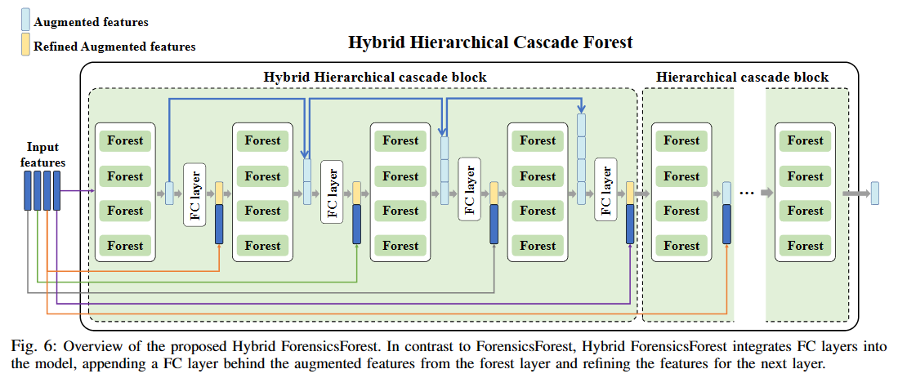
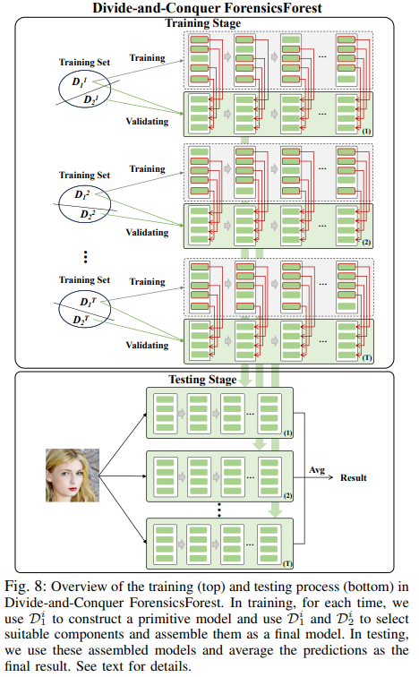

ForensicsForest Family: A Series of Multi-scale Hierarchical Cascade Forests for Detecting GAN-generated Faces
作者: Jiucui Lu, Jiaran Zhou, Junyu Dong, Bin Li, Siwei Lyu, Yuezun Li#.
期刊名称: IEEE Transactions on Information Forensics and Security (TIFS). CCF A. 影响因子6.8.
摘要：生成对抗模型（GAN）的显著发展极大地提高了生成人脸的质量，但也加剧了社会安全问题。为了应对这一挑战，许多工作致力于研究用于检测GAN生成人脸的方法。这些工作通常利用深度学习模型强大的学习能力，构建基于卷积神经网络（CNN）的GAN生成人脸检测器。尽管这些模型在该任务中表现出现，但存在以下两点局限性：（1）由于 CNN 模型具有复杂的网络结构以及大量的可学习参数，因此模型训练需要大量计算资源。（2）由于其可微性质，CNN模型容易受到对抗样本的攻击，引发了安全问题。本文重新审视了这些问题，探索了一种基于随机森林模型而非CNN模型的全新方法。具体来说，提出了一种简单而有效的森林模型方法集（ForensicsForest Family）用于检测GAN生成人脸。该方法包含三个变体：多尺度分层级联森林（ForensicsForest）、混合式多尺度分层级联森林（Hybrid ForensicsForest）和分而治之多尺度分层级联森林（Divide-and-Conquer ForensicsForest）。所提方法在当前GAN生成人脸数据集上进行了验证，并与多个基于CNN模型的检测方法进行了比较，结果表明所提方法在检测GAN生成人脸任务上非常有效。本文工作验证了传统机器学习模型在生成人脸检测任务上的可行性，为后续研究提供了新的思路。

方法简介：（1） 提出了多尺度分层级联森林（ForensicsForest）。该模型将外观、频率和生物特征作为输入，通过分层级联不同层次的输入特征进行人脸真实性预测。同时该模型采用多尺度集成策略，综合考虑不同尺度生成人脸所包含的伪造痕迹，进一步提高检测效果。
 


（3）此外，为了减少模型训练过程中的内存消耗，提出了分而治之多尺度分层级联森林（Divide-and-Conquer ForensicsForest）。该模型仅需要部分训练样本就能够构建性能良好的分层级联森林。具体做法是在训练阶段，通过使用训练样本的不同子集训练多个候选森林模型，然后从这些候选模型中选择合适的组件来拼接ForensicsForest，以兼顾内存需求和检测性能。
© AI Security Group (AISec) @ OUC